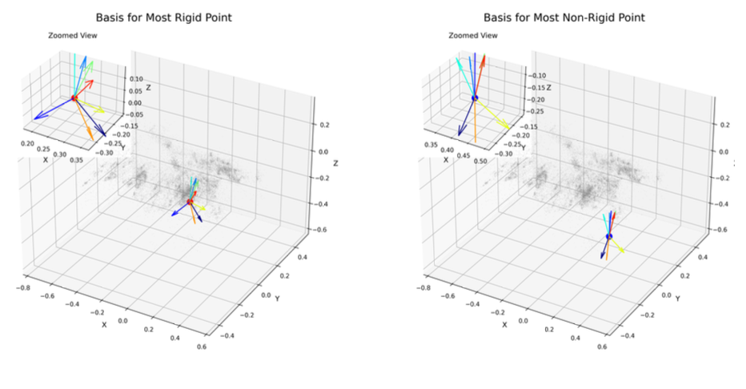

01

ECCV 2026
MoBa-GS: Learning a Spatially-Varying Motion Basis over a Dynamic Canonical Space for 4D Reconstruction
A spatially-factorized motion field decouples geometry from non-rigid dynamics through a learnable per-point kinematic subspace. Renders above 163 FPS, stores in ~11 MB, trains in ~18 minutes, and needs no SfM initialization.